: 해시 자료구조는 키에 대응되는 값을 저장하는 자료구조이다.
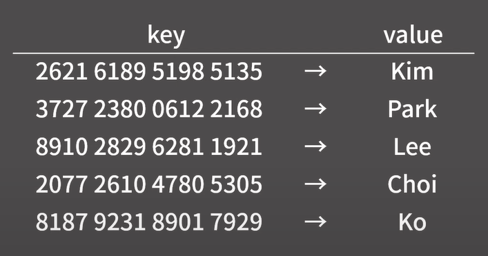
- 해시 자료구조에서는 insert, erase, find, update 모두 O(1) time에 수행 가능

- 배열 하나하나마다 카드번호를 저장하는 방식
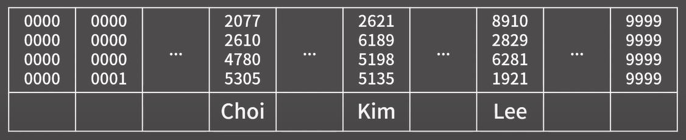
- 카드 번호 종류가 10^16개라 용량이 40PT가 필요 → 너무 큼
- 뒷 4자리만 확인해도 identity 확인 가능
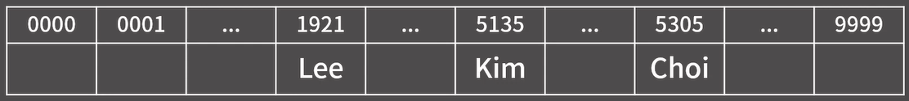
- insert, erase, find, update 모두 뒷 4자리를 인덱스로 생각해서 대응되는 배열의 값을 보고 처리를 해줄 수가 있기 때문에 전부 O(1)에 처리가 가능
- 해시 함수
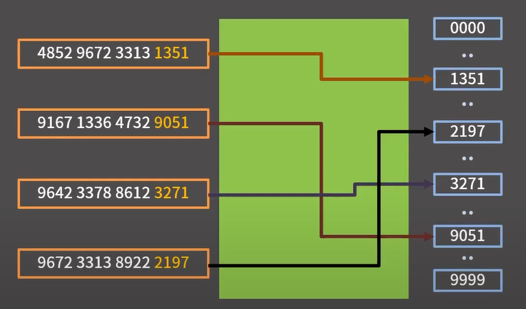
- 해시 함수는 임의 길이의 데이터를 고정된 길이의 데이터로 대응시키는 함수이다.
- 충돌
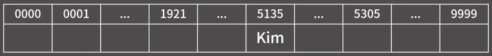
- 0000 0000 0000 5135 → Kim
- 9999 9999 9999 5135 → Kim
- 카드 번호가 다르지만 대응 되는 것이 같은 Kim이 된다.
- 즉, 서로 다른 키가 같은 해시 값을 가지게 될 경우 동작이 이상해질 수 있다. 이것을 충돌이라 한다.
충돌 회피 전략
-
Chaining
-
Insert
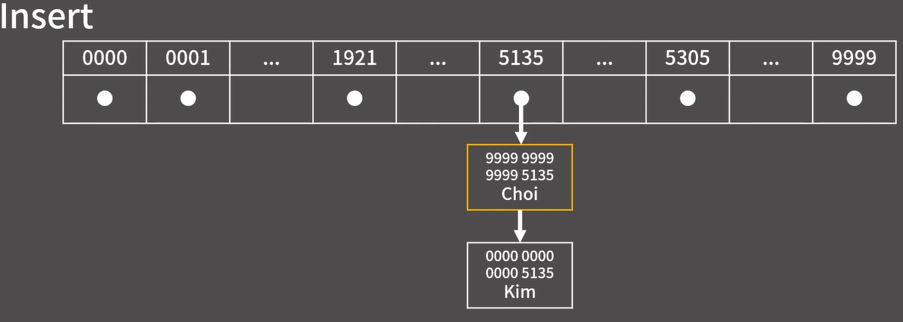
- 연결 리스트로 Insert 진행
-
Erase
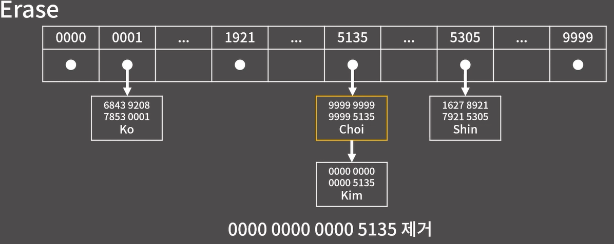
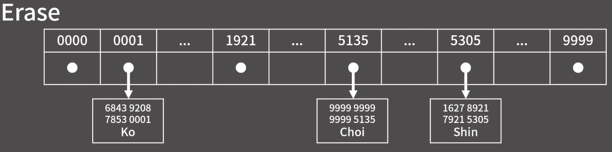
- 해당 index의 연결리스트로 들어가 value값이 맞다면 삭제
- 해시 자료구조는 이상적인 상황에서는 O(1)이지만, worst case에서는 O(N) time이 걸린다.
- 각 키의 해시 값이 최대한 균등하게 퍼져야 성능이 좋다.
-
Insert
-
Open Addressing
- Chaining과 다르게 각 인덱스에 바로 (키, 값) 쌍을 쓴다.
-
Insert
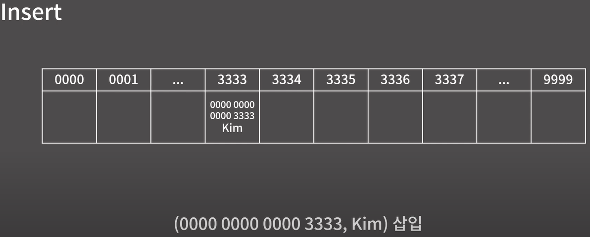
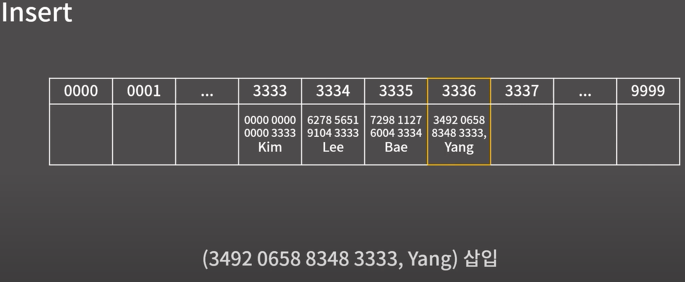
- index가 비어 있다면 삽입하고, 채워져 있다면 다음 index로 이동
-
Find
- Yang의 카드 번호임을 알 수 있음.
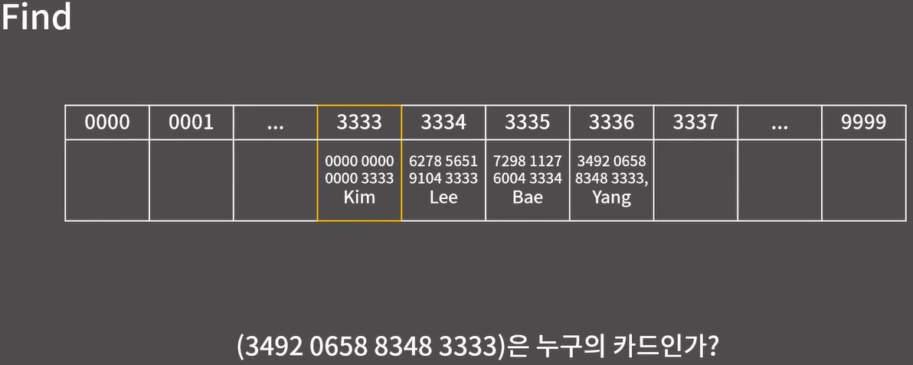
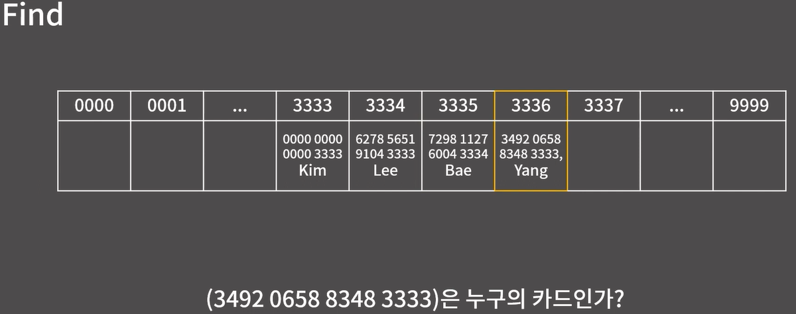
- 카드 번호가 비어있는 경우 해당 번호가 저장되지 않았다는 것을 알 수 있다.
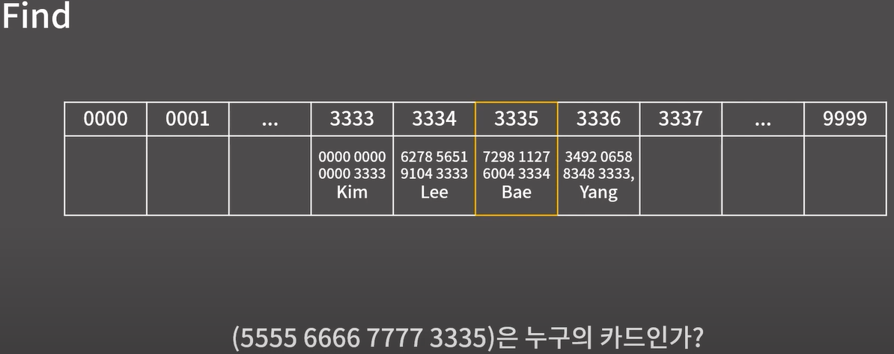
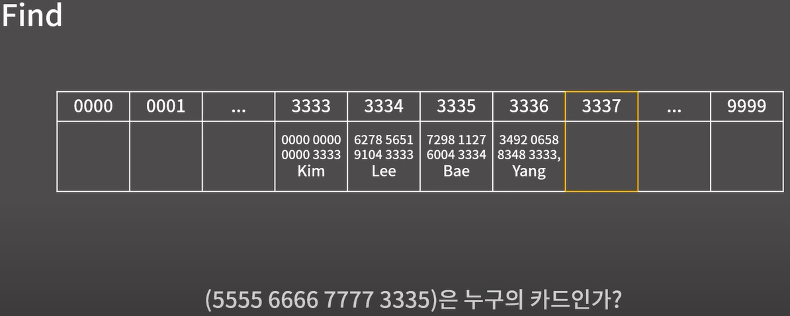
-
Erase
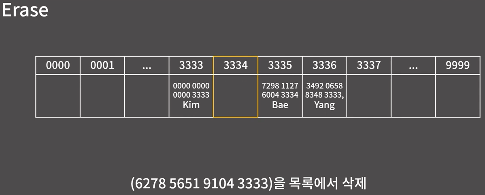
- 삭제할 때 무지성으로 값을 지우고 빈 상태로 두면 안된다.
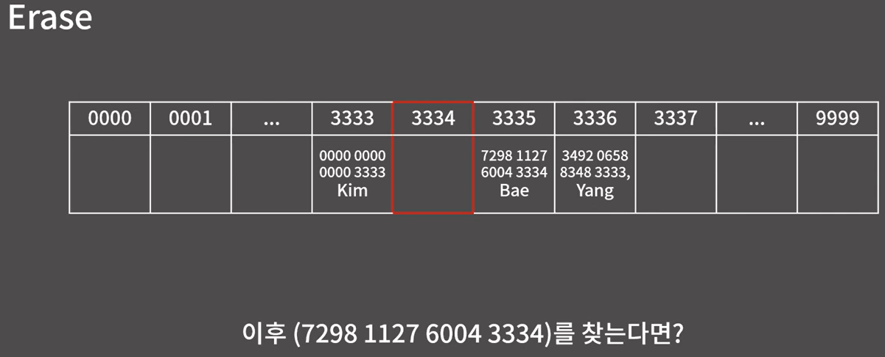
- 중간을 비워버리면 탐색이 조기 종료되어 뒤쪽 원소를 못 찾는 문제가 생긴다.
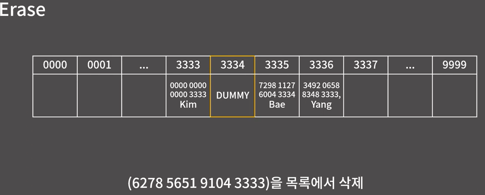
- 삭제 상태(deleted)를 별도로 표시해줘야 한다.
-
Linear Probing
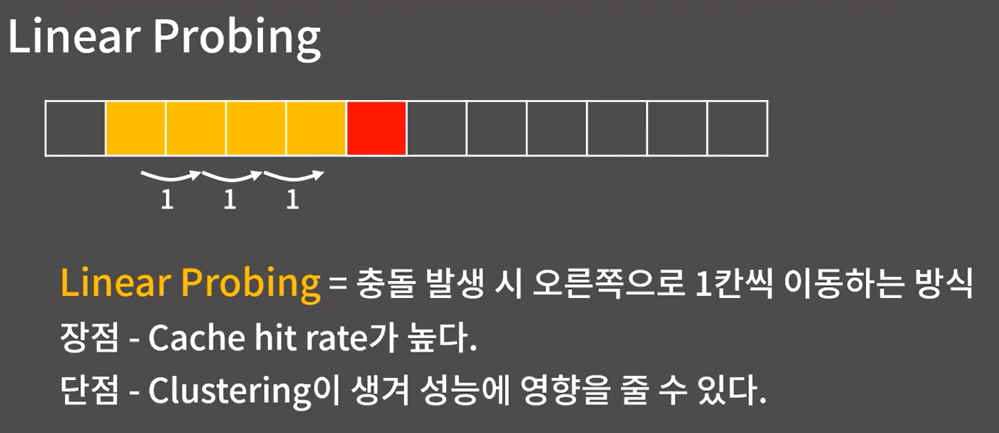
- Clustering(군집)이 커질수록 평균 탐색 비용이 증가한다.
-
Quadratic Probing
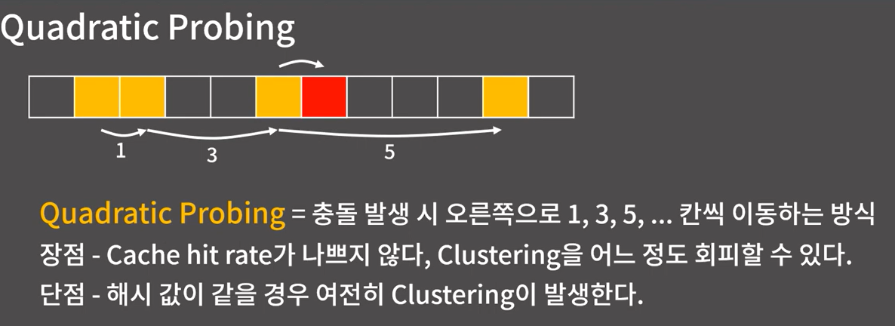
-
Double Hashing
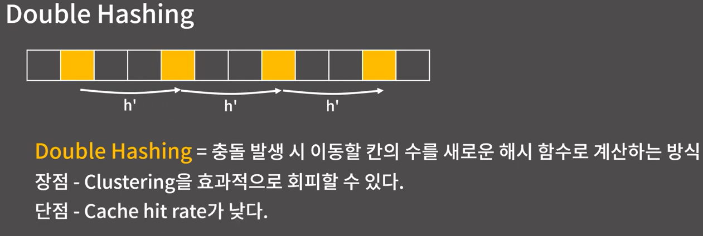
실제 구현 예제 코드
1) Chaining 기반 HashMap (Java)
import java.util.LinkedList;
import java.util.Objects;
class ChainingHashMap {
static class Entry {
String key;
String value;
Entry(String key, String value) {
this.key = key;
this.value = value;
}
}
private static final int SIZE = 16;
private final LinkedList<Entry>[] table;
@SuppressWarnings("unchecked")
public ChainingHashMap() {
table = new LinkedList[SIZE];
for (int i = 0; i < SIZE; i++) {
table[i] = new LinkedList<>();
}
}
private int hash(String key) {
return Math.abs(Objects.hashCode(key)) % SIZE;
}
public void put(String key, String value) {
int idx = hash(key);
for (Entry e : table[idx]) {
if (e.key.equals(key)) {
e.value = value; // update
return;
}
}
table[idx].add(new Entry(key, value)); // insert
}
public String get(String key) {
int idx = hash(key);
for (Entry e : table[idx]) {
if (e.key.equals(key)) return e.value;
}
return null;
}
public boolean remove(String key) {
int idx = hash(key);
return table[idx].removeIf(e -> e.key.equals(key));
}
}2) Open Addressing (Linear Probing) 기반 HashMap (Java)
import java.util.Objects;
class OpenAddressHashMap {
static class Entry {
String key;
String value;
boolean deleted;
Entry(String key, String value) {
this.key = key;
this.value = value;
this.deleted = false;
}
}
private static final int SIZE = 32;
private final Entry[] table = new Entry[SIZE];
private int hash(String key) {
return Math.abs(Objects.hashCode(key)) % SIZE;
}
public void put(String key, String value) {
int idx = hash(key);
for (int i = 0; i < SIZE; i++) {
int p = (idx + i) % SIZE; // linear probing
if (table[p] == null || table[p].deleted || table[p].key.equals(key)) {
table[p] = new Entry(key, value);
return;
}
}
throw new IllegalStateException("Hash table is full");
}
public String get(String key) {
int idx = hash(key);
for (int i = 0; i < SIZE; i++) {
int p = (idx + i) % SIZE;
Entry e = table[p];
if (e == null) return null; // 탐색 종료
if (!e.deleted && e.key.equals(key)) return e.value;
}
return null;
}
public boolean remove(String key) {
int idx = hash(key);
for (int i = 0; i < SIZE; i++) {
int p = (idx + i) % SIZE;
Entry e = table[p];
if (e == null) return false;
if (!e.deleted && e.key.equals(key)) {
e.deleted = true; // tombstone
return true;
}
}
return false;
}
}